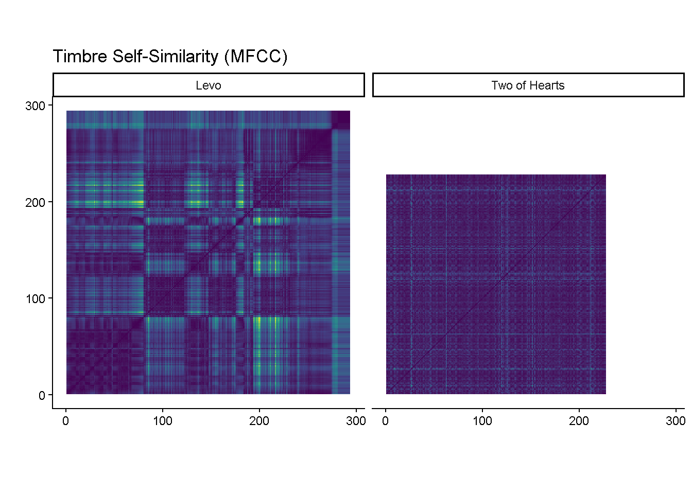
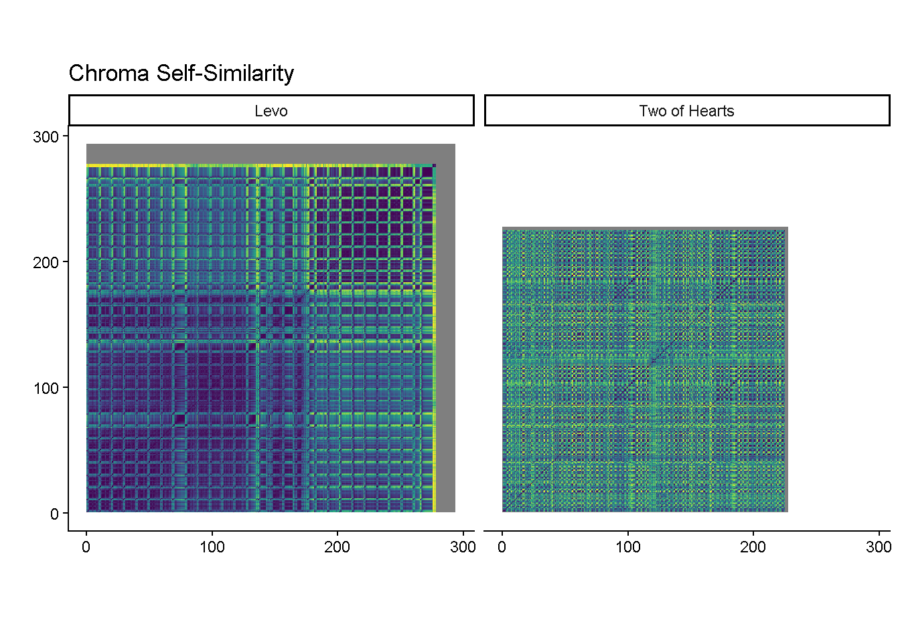

library(tidyverse)
library(compmus)These MFCC-based self-similarity matrices show a difference in structure between the two tracks. Where Levo shows clear changes in timbre, which is typical of minimal techno, Two of Hearts appears more to be more similar in timbre.
library(tidyverse)
library(compmus)
make_timbre_ssm <- function(path, label, downsample = 50L,
norm = "euclidean", dist = "cosine") {
mfcc <- read_csv(path, show_col_types = FALSE)
# estimate frame step from TIME
dt <- median(diff(mfcc$TIME), na.rm = TRUE)
mfcc %>%
mutate(
start = TIME,
duration = lead(TIME) - TIME,
duration = if_else(is.na(duration), dt, duration),
timbre = pmap(select(., starts_with("BIN")), c)
) %>%
select(start, duration, timbre) %>%
filter(row_number() %% downsample == 0L) %>%
mutate(timbre = map(timbre, compmus_normalise, norm)) %>%
compmus_self_similarity(timbre, dist) %>%
mutate(track = label)
}
two_ssm <- make_timbre_ssm("two-mfcc.csv", "Two of Hearts", downsample = 50L)
levo_ssm <- make_timbre_ssm("levo-mfcc.csv", "Levo", downsample = 50L)
ssm_both <- bind_rows(two_ssm, levo_ssm)
p <- ggplot(ssm_both, aes(
x = xstart + xduration/2,
y = ystart + yduration/2,
fill = d
)) +
geom_tile(aes(width = 50 * xduration, height = 50 * yduration)) +
coord_fixed() +
scale_fill_viridis_c(guide = "none") +
facet_wrap(~ track, nrow = 1) +
theme_classic() +
labs(title = "Timbre Self-Similarity (MFCC)", x = "", y = "")
p
## 2) Chroma Self-SimilarityThis chroma SSM displays patterns of harmonic repetition. Two of Hearts shows more harmonic cycles and Levo shows weaker harmonic distribution which aligns with minimal techno’s focus on texture over harmonic progression.
library(tidyverse)
library(compmus)
make_chroma_ssm <- function(path, label, downsample = 10L,
norm = "manhattan", dist = "cosine") {
df <- read_csv(path, show_col_types = FALSE)
chroma_cols <- c("C","C#","D","Eb","E","F","F#","G","Ab","A","Bb","B")
dt <- median(diff(df$TIME), na.rm = TRUE)
df %>%
mutate(
start = TIME,
duration = lead(TIME) - TIME,
duration = if_else(is.na(duration), dt, duration),
chroma = pmap(select(., all_of(chroma_cols)), c)
) %>%
select(start, duration, chroma) %>%
filter(row_number() %% downsample == 0L) %>%
mutate(chroma = map(chroma, compmus_normalise, norm)) %>%
compmus_self_similarity(chroma, dist) %>%
mutate(track = label)
}
two_chroma_ssm <- make_chroma_ssm("two-chroma.csv", "Two of Hearts", downsample = 10L)
levo_chroma_ssm <- make_chroma_ssm("levo-chroma.csv", "Levo", downsample = 10L)
chroma_both <- bind_rows(two_chroma_ssm, levo_chroma_ssm)
p_chroma <- ggplot(chroma_both, aes(
x = xstart + xduration/2,
y = ystart + yduration/2,
fill = d
)) +
geom_tile(aes(width = 10 * xduration, height = 10 * yduration)) +
coord_fixed() +
scale_fill_viridis_c(guide = "none") +
facet_wrap(~ track, nrow = 1) +
theme_classic() +
labs(title = "Chroma Self-Similarity", x = "", y = "")
p_chroma